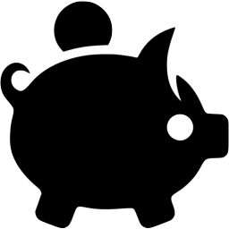

At (), grant (), lecturing (), organizing (), paper (), service (), software (), talk (), TR (
 ),
visit(or) (),
workshop (
),
visit(or) (),
workshop ( ).
).
Zoltán Szabó
Department of Statistics, LSE [local time]),
visit(or) (),
workshop ().
| Oct. | Organizing: Kernel Methods for Structured Data and Distributions (workshop) with Alessandro Rudi @ DALI-2023 |
| Jun. - Aug. | Service: Area Chair @ NeurIPS-2023 |
| June 10-14 |
Plenary Talk @ ACDL-2023 |
| Mar. - Apr. | Service: SPC @ COLT-2023, AC @ ICML-2023, UAI-2023 |
| Mar. 2- | Service: Senior Associate Editor @ ACM Transactions on Probabilistic Machine Learning |
| Feb. 20 |
TR: Nyström M-Hilbert-Schmidt Independence Criterion [paper (arXiv), code] = consistent estimation of HSIC for ≥ 2 components using the Nyström technique |
| Jan. 31 |
TR: Kernelized Cumulants: Beyond Kernel Mean Embeddings [paper (arXiv), code] = higher-degree generalization of MMD and HSIC; applications: environmental and traffic data analysis |
| Spring | Lecturing: Graph Data Analytics and Representation Learning |
| Nov. - Dec. | Service: Senior Area Chair @ AISTATS-2023 |
| Oct. 26 |
Paper: @ JMLR [paper, paper (JMLR), code] = hard affine SDP shape constraints in vector-valued RKHSs; applications: shape optimization, safety-critical control, robotics, econometrics |
| Oct. - Dec. | Service: Area Chair @ ICLR-2023 |
| Autumn | Lecturing: Artificial Intelligence |
| Sept. 29 |
Talk @ CGO Seminar [abstract, slides] |
| Sept. 21 |
Talk @ Data Science Research Lightning Talks event (DSI) [slides] |
| Sept. 8 |
Talk @ BIRS workshop on New Interfaces of Stochastic Analysis and Rough Paths [abstract, slides] |
| Sept. - Dec. | Working with Florian Kalinke (Ph.D. visitor) |
| Sept.- | Service: Programme Director of MSc Data Science |
| Sept. | Welcome to & start working with Sakina Hansen (PhD) and Pingfan Su (PhD) |
| July 28 |
TR: Handling Hard Affine SDP Shape Constraints in RKHSs (extended and simpler proof, new application in robotics) [paper (arXiv)] = hard affine SDP shape constraints in vector-valued RKHSs; applications: shape optimization, robotics, econometrics |
| Jun. - Aug. | Service: Area Chair @ NeurIPS-2022 |
| June 23 |
Paper: 'Discussion of `Multiscale Fisher's Independence Test for Multivariate Dependence'' @ Biometrika [paper (arXiv), paper (Biometrika)] |
| June 14-15 | Organizing: LSE Statistics Research Showcase |
| June 4 |
Talk @ EcoSta [abstract, slides] |
| May 26 |
Talk @ DataSig Seminar [abstract, slides] |
| May 14 |
Paper: 'Functional Output Regression with Infimal Convolution: Exploring the Huber and Epsilon-Insensitive Losses'
accepted @ ICML-2022 [paper, paper (arXiv), code, presentation (video)] = functional output regression with sparsity-inducing and robust loss; applications: neuroimaging, speech analysis |
| Apr. - May | Service: Area Chair @ UAI-2022 |
| Feb. - Apr. | Service: Area Chair @ ICML-2022 |
| Mar. - Apr. | Service: SPC @ COLT-2022 |
| Jan. 26 |
Talk @ Gatsby Unit [abstract, slides] |
| Jan. 12 |
Talk @ Lifting Inference with Kernel Embeddings (LIKE22)
winter school and workshop [slides] |
| Dec. 19 |
Talk @ CMStatistics-2021 [abstract, slides] |
| Dec. 13 |
Talk @ Data Science Institute [slides] |
| Nov. - Dec. | Service: Area Chair @ AISTATS-2022 |
| Oct. - Dec. | Service: Area Chair @ ICLR-2022 |
| Nov. 4 |
Talk @ Data Science Seminar at Eurecom [abstract, slides] |
| Oct. 20 |
TR: Kernel Minimum Divergence Portfolios [paper (arXiv)] = analytic mean embeddings, better concentration of the resulting MMD estimators, portfolio optimization |
| Oct. 14 | Talk @ LSE Statistics Open House |
| Oct.- | Organizing: Data Science Seminars (local-, departmental archive) |
| Service: DSI Management Committee | |
| Autumn | Lecturing: Artificial Intelligence |
| Sept. | Starting at LSE! |
| June - Sept. | Service: Area Chair @ NeurIPS-2021 |
| Aug. 31 | At: Linda's Ph.D. defense |
| July 8 |
Talk @ EUROPT-2021 [slides] |
| July 7 | At: Alex's Ph.D. defense |
| July 5 | At: Pierre-Cyril's Ph.D. defense |
| May 20 (morning) |
Talk @ LIS, Aix-Marseille University [abstract, slides] |
| May 18-21 | At: RESIM-2021 |
| Mar. 24 | Lecturing: Mini-Course on Independence Measures and Testing |
| Mar. - Apr. | Service: Area Chair @ ICML-2021 |
| Mar. - Apr. | Service: SPC @ UAI-2021 & COLT-2021 |
| Service: reviewing grants @ Israel Science Foundation (ISF) | |
| Mar. 4 | Talk @ Department of Statistics, LSE |
| Feb. - Mar. | Service: Area Chair @ IJCAI-2021 |
| Feb. 12 |
Talk @ Texas A&M University: Department of Statistics [abstract, slides] |
| Feb. 4 |
TR: Emotion Transfer Using Vector-Valued Infinite Task Learning [paper, paper (arXiv), demo (video), code] = emotion/style transfer with operator-valued kernels |
| Jan. 6-8 | Organizing: I am Program Chairing DS3-2020 (postponed to Jan 2021 due to COVID-19) |
| Jan. 6 |
TR: Handling Hard Affine SDP Shape Constraints in RKHSs [paper (arXiv), paper (HAL)] = hard affine SDP shape constraints in vector-valued RKHSs; applications: shape optimization, safety-critical control, econometrics |
| Dec. 15 |
Talk @ Meeting on Mathematical
Statistics (MMS) [abstract, slides] |
| Dec. 6-12 |
At: NeurIPS-2020 [paper, slides, spotlight video, code] |
| Nov. - Dec. | Service: Area Chair @ AISTATS-2021 |
| Nov. 30 - Dec. 1 | Organizing: StressTest-2020 workshop with Stefano De Marco and Emmanuel Gobet |
| Oct. - Nov. | Service: Area Chair @ ICLR-2021 |
| Sept. 25 |
Paper: 'Hard Shape-Constrained Kernel Machines' accepted @ NeurIPS-2020 [paper, paper (NeurIPS), paper (arXiv), paper (HAL), slides, code] = SVMs with hard affine shape constraints on derivatives; applications: joint quantile regression, economics, analysis of aircraft trajectories |
| Sept.- | Organizing: I have joined to the organizing board of the Statistics Seminars (CREST-CMAP). |
| Sept. 7 |
Talk @ SMAI-MODE (Pierre-Cyril) [abstract, slides] |
| June - Aug. | Service: Area Chair @ NeurIPS-2020 |
| July 27-31 |
Poster: 'Hard Shape-Constrained Kernel Regression' @ SPIGL [abstract, poster] |
| July 11-17 |
Talk @ IFAC-WC (Pierre-Cyril) [slides, talk (video)] |
| July 14-15 | Service: Newcomers' Mentoring @ ICML-2020 |
| June- | Service: Editorial Board Member @ JMLR |
| June 11 |
Paper: Orlicz Random Fourier Features @ JMLR [paper, JMLR: paper, HAL: paper] = tight uniform guarantees for random Fourier features under mild conditions for arbitrary order derivatives |
| May 27 |
TR: Hard Shape-Constrained Kernel Machines [arXiv: paper; HAL: paper] = SVMs with hard affine shape constraints on derivatives |
| May 18 - Aug. 18 | Welcome to & start working with Bechir Trabelsi (M.Sc. intern). |
| Apr. 23- | Organizing: SIMPAS Group Meeting |
| Apr. 6 | Grant: Europlace Institute of Finance (EIF), joint work with Dino Sejdinovic & Olivier Derollez. |
| Apr. 1 | Service: Recruitment Committee Member (M.Sc. @ Data Science for Business) |
| Mar. - Apr. | Service: SPC @ UAI-2020 |
| Feb. - Apr. | Service: Area Chair @ ICML-2020 |
| Feb. - Mar. | Service: SPC @ IJCAI-2020 |
| Mar. 5 |
Talk @ ML journal club [slides] |
| Feb. 27 |
Paper: 'Kernel Regression for Vehicle Trajectory Reconstruction under Speed and Inter-vehicular Distance Constraints'
accepted @ IFAC World Congress (IFAC WC) [paper] = application of shape-constrained SVMs for trajectory reconstruction from noisy GPS measurements |
| Service: External reviewer of Luigi Carratino's Ph.D. thesis | |
| Jan. 30 |
Paper: 'Kernel Regression with Hard Shape Constraints' accepted @ SMAI-MODE 2020 [slides] |
| Jan 21 | Talk @ D. E. Shaw Group |
| Jan 9-11 |
Talk @ International Conference on Modern Mathematical Methods and High Performance Computing in Science & Technology (M3HPCST-2020) [abstract, slides] |
| Dec. 29- | Service: Associate Editor @ Mathematical Foundations of Computing |
| Dec. 26-30 |
Talk @ International Indian Statistical Association Conference (IISA-2019) [abstract, slides] |
| Dec 20 |
TR: Orlicz Random Fourier Features [paper; HAL: paper] = fast uniform approximation of arbitrary-order kernel derivatives with random Fourier features under mild (alpha-exponential Orlicz spectrum) assumption |
| Dec. 16 | HDR with distinction. |
| Nov. 19 | At: Workshop on Regularisation for Inverse Problems and Machine Learning |
| Nov. - Dec. | Service: Area Chair @ AISTATS-2020 |
| Sept. 23 |
Talk @ EPFL [abstract, slides] |
| Sept. 2-5 |
At: DALI-2019 (San Sebastian, Spain) [poster] |
| July - Aug. | Service: Senior Area Chair @ NeurIPS-2019 |
| July 15-17 |
Lecturing @ Summer School on
Data Science for Document Analysis and Understanding [slides] |
| July 11-13 |
Talk @ Gatsby 21st Birthday Symposium [slides] |
| June 24-28 | Organizing: I am Program Chairing DS3-2019. |
| June 19-23 |
Talk @ Third International Conference on Mathematics of Data Science
(MathoDS 3) [abstract, slides, code] |
| June 9-15 |
At: ICML-2019 [paper, slides, poster, code] |
| May 30- | Service: arXiv Statistics Advisory Committee Member |
| May 29 |
Paper: 'A Functional Extension of Multi-Output Learning' will be presented @ AMTL-2019 [paper] |
| May 28-29 | At: Stress Test Workshop |
| May 27 | Service: Recruitment Committee Member (M.Sc. @ Data Science for Business) |
| May 17 | Paper: 'Infinite Task Learning in RKHSs' will be presented @ CAp-2019 |
| May 7 & 10 | Lecturing: Data for Management Certificate @ HEC Paris |
| Apr. 22 |
Paper: 'MONK -- Outlier-Robust Mean Embedding Estimation by Median-of-Means' accepted @ ICML-2019 [preprint on arXiv: paper] = new MMD and mean embedding estimators: with optimal sub-Gaussian rate & excessive resistance to contamination |
| Apr. 16-18 |
At: AISTATS-2019 [paper-1, poster-1, paper-2, poster-2] |
| Apr. 15 |
Talk @ RIKEN AIP workshop [abstract, slides, code] |
| Apr. | Service: reviewer @ SPARS-2019 & ICANN-2019 |
| Mar. 25 - July 31 | Service: referent professor @ Nicolas Bonnet's internship, Atos India. |
| Spring | Lecturing: Advanced Machine Learning |
| Spring | Lecturing: Structured Data: Learning, Prediction, Dependency, Testing |
| Mar. - Apr. | Service: SPC @ IJCAI-2019 |
| Mar. 7 | Visitor: Guillaume Perrin is visiting us and gives an external seminar. |
| Feb. - Mar. | Service: Area Chair @ ICML-2019 |
| Feb. 15 |
At: PASADENA workshop [slides] |
| Feb. 12 - Mar. 12 | Service: For one month I also serve (in addition to stat.ML) as the cs.LG moderator on arXiv, replacing Thomas Dietterich. |
| Feb. 8 | Service: Recruitment Committee Member (M.Sc. @ Data Science for Business) |
| Feb. 7 | Visitor: Anne Sabourin is visiting us and gives an external seminar. |
| Jan. - Feb. | Service: Program Committee Member @ ICML-2019 workshops |
| Jan. 3-5 |
At: DALI-2019 [poster] |
| Dec. 23 |
Paper: 2 papers accepted @ AISTATS-2019 [preprints on arXiv: paper-1, paper-2] |
| Dec. 19 | I am being interviewed to the film Mind (topic: AI & Brain). |
| Dec. 2-8 | At: NeurIPS-2018 |
| Nov. 29, Dec. 13; Jan. 10 (2019) | Visitor: Stéphane Girard is visiting us and gives a mini course. |
| Nov. 21 | Service: Recruitment Committee Member (M.Sc. @ Data Science for Business) |
| Oct. - Dec. | Service: SPC @ AISTATS-2019 |
| Fall | Lecturing: Statistics |
| Fall | Lecturing: Introduction to Machine Learning |
| Oct. 31 | Visitor: Lilian Besson is visiting us and gives a seminar. |
| Oct. 26 |
Talk @ Statistical Seminar in Rennes [abstract, slides] |
| Oct. 11 |
TR: On Kernel Derivative Approximation with Random Fourier Features [arXiv: paper, HAL: paper] = random Fourier features can be as efficient for kernel derivative approximation as for kernel values; tool: unbounded empirical processes |
| Oct. | Service: reviewer @ CiML-2018 |
| Sept. - Oct. | Service: reviewer @ ICLR-2019 |
| Sept. 17-20 |
At: Polish-Italian Mathematical Conference: Challenges and Methods of Modern Statistics [abstract, slides] |
| Sept. 10 | Service: Committee Member @ X-HEC (M.Sc.): internship defense |
| Sept. 4 |
Talk @ B.Sc. Day at CMAP [slides] |
| Aug. 30 |
Paper: Infinite-Task Learning: accepted @ JDSE-2018 [paper, poster, slides] |
| Aug. 28- | Service: I am the moderator of statistical machine learning (stat.ML) on arXiv. |
| Aug. 2 |
Paper: Characteristic and Universal Tensor Product Kernels @ JMLR [paper] = characterization of when HSIC is an independence measure |
| Service: reviewing grants @ European Research Council (ERC) | |
| June - Aug. | Service: Area Chair @ NIPS-2018 |
| July 18 & 20 |
Lecturing @ Summer School on Data Science for Document Analysis and Understanding [slides] |
| July 10-15 | At: ICML-2018 |
| June 25 |
Paper: Characteristic and Universal Tensor Product Kernels (accepted to JMLR). [paper; arXiv: paper, HAL: paper; +details @ Aug. 2] |
| June 25-29 | Organizing: I am Program Chairing DS3-2018. |
| June 19 | Visitor: Subhadeep Mukhopadhyay is visiting us and gives a seminar. |
| June | Service: reviewer @ Cambridge University Press |
| June 11-15 |
At: Conference of the International Society for Non-Parametric Statistics (ISNPS) [abstract-1, slides-1; abstract-2, slides-2] |
| June 5 | Visitor: Martin Wainwright is visiting us and gives a seminar. |
| May 28 - June 1 |
At: JdS-2018 [slides] |
| May. 24 |
TR: Infinite-task learning with vector-valued RKHSs [arXiv: paper, HAL: paper; code] = learning continuum number of tasks jointly; examples: cost-sensitive classification, joint quantile regression, density level set estimation; tool: operator-valued kernels. |
| May 17-20 |
At: Hangzhou International Conference on Frontiers of Data Science [abstract, slides] |
| Apr. 10 | Visitor: Claire Monteleoni is visiting us and gives a seminar. |
| Apr. 3-5 |
At: DALI-2018 [poster] |
| Apr. | Welcome to & start working with Meyer Scetbon (M.Sc. intern). |
| March | Service: reviewer @ COLT-2018 |
| Mar. 23 |
Talk @ Sertis (Wittawat) [slides] |
| Mar. 22 | Service: Committee Member @ M.Sc. defense: Statistical Models in Biology and Physics. |
| Mar. 13-14 | At: PGMO lecture series by Sébastien Bubeck on Bandit Convex Optimization |
| Mar. 6 | Visitor: Alessandro Rudi is visiting us and gives a seminar. |
| Mar.- | Member of the French Statistical Society (SFdS) |
| Feb. - Mar. | Service: Area Chair @ ICML-2018 |
| Feb. 28 |
Talk @ Laboratory for Information and Inference Systems, EPFL [abstract, slides] |
| Feb. 26 |
Talk @ Machine Learning & Computational Biology Lab, D-BSSE, ETH Zürich [slides] |
| Feb. 20 |
Workshop: Workshop on Functional Inference and Machine Intelligence [slides, code] |
| Feb. 14 |
TR: MONK – Outlier-Robust Mean Embedding Estimation by Median-of-Means [arXiv: paper, HAL: paper] = consistent outlier-robust mean embedding & MMD estimation, with optimal rates. |
| Feb. 13 |
Talk @ Tao Seminar, INRIA Saclay [abstract, slides] |
| Feb. 2 | At: CentraleSupélec & ICM workshop |
| Jan. 24 | Interview at TWiML & AI (YouTube, SoundCloud) on our NIPS-2017 Best Paper Award is up. |
| Jan. 23 | Visitor: Marco Cuturi is visiting us and gives a seminar. |
| Jan. | Welcome to & start working with Linda Chamakh (Ph.D.). |
| Spring | Lecturing: Structured Data: Learning, Prediction, Dependency, Testing |
| Spring | Lecturing: Advanced Machine Learning |
| Dec. 11-15 | Visit @ Department of Statistics, Pennsylvania State University. Talk: slides |
| Dec. 4-9 |
At: NIPS-2017. Our submission got one of the 3 Best Paper Awards! (out of 3240 submissions) [paper, paper (NIPS website), poster, slides, talk (video), slides @ MLTrain workshop, interview at TWiML & AI (YouTube, SoundCloud), code] = adaptive linear-time nonparametric goodness-of-fit test |
| Dec. 8 | Organizing: Learning on Distributions, Functions, Graphs and Groups workshop @ NIPS-2017. |
| Dec. 1 |
Talk @ Google Brain, Mountain View [abstract, slides] |
| Nov. - Dec. | Service: Area Chair @ AISTATS-2018 |
| Nov. 29 | Visit @ Department of Statistics, Columbia University |
| Nov. 28 |
Talk @ Advanced Methods Group, Cubist Systematic Strategies [abstract, slides] |
| Nov. 28 |
Talk @ Yahoo Research, New York [abstract, slides] |
| Nov. 27 |
Guest Lecturing @ Machine Learning Department, Carnegie Mellon University. [slides, course] |
| Nov. 14 | At: Random matrix advances in large dimensional statistics and machine learning day |
| Nov. 3 |
Talk @ Research Seminar, SfS, ETH Zürich [abstract, slides] |
| Service: reviewing grants @ Swiss National Science Foundation (SNF) | |
| Oct. - Nov. | Service: reviewer @ ICLR-2018 |
| Oct. 11 | At: Le Cam Data Science Colloquium @ EDF Lab, Paris-Saclay |
| Oct. 9 |
Talk @ CREST Statistics Seminar, ENSAE [abstract, slides] |
| Oct. | Welcome to & start working with Gaspar Massiot (postdoc), Romain Brault (postdoc), Alex Lambert (Ph.D.), Moussab Djerrab (Ph.D.). |
| Sept. 27 | Service: Committee Member @ Data Science Master: internship defense (École Polytechnique - morning, Télécom ParisTech - afternoon) |
| Sept. 9 | Organizing: Our Learning on Distributions, Functions, Graphs and Groups workshop proposal with Florence, Krikamol & Bharath @ NIPS-2017 got accepted. |
| Sept. 4-5 | Service: Committee Member @ Data Science Master: internship defense |
| Sept. 4 |
Paper: A Linear-Time Kernel Goodness-of-Fit Test. to appear @ NIPS-2017 , see 'Dec. 4-9'. |
| Aug. 28 - Sept. 1 | Organizing: I am Program Chairing DS3-2017. |
| Aug 28 |
TR: Characteristic and Universal Tensor Product Kernels [arXiv: paper, HAL: paper] |
| Aug 9 |
Paper @ ICML-2017 [slides, poster; further details @ 'May 12'] |
| July 27 |
Lecturing @ Summer School on Mathematical and Computational Methods for Life Sciences [slides] |
| July 14-17 |
At: Greek Stochastics Workshop - Model Determination; details @ 'Apr. 17' [slides] |
| July 3-7 | Visitor: Bharath Sriperumbudur is visiting us and gives seminars. |
| July 3 | Service: Ph.D. committee member @ Romain Brault's defense |
| June - July | Service: reviewer @ NIPS-2017 |
| June 28 |
Workshop: UCL Workshop on the Theory of Big Data [abstract, slides, code] |
| June 22-23 | Visitor: Barnabás Póczos is visiting us and gives seminars. |
| June 21 | Visitor: Florence d'Alché-Buc & Romain Brault are visiting us and give seminars. |
| June 19-20 | At: Structured Regularization Summer School |
| June 14 | At: Le Cam Data Science Colloquium @ Digiteo LABS |
| May - June | Service: SPC @ UAI-2017 |
| May 22 |
TR: A Linear-Time Kernel Goodness-of-Fit Test [arXiv: paper, HAL: paper; code] = adaptive linear-time nonparametric goodness-of-fit test |
| May 17 |
Talk @ Télécom ParisTech: PASADENA Seminar [abstract, slides, code] |
| May 12 |
Paper: An Adaptive Test of Independence with Analytic Kernel Embeddings [paper, paper (ICML website), preprint on arXiv; code] accepted @ ICML-2017 = adaptive linear-time nonparametric independence test |
| May 9 | At: ParisBD-2017 |
| May 4 |
Talk @ Machine learning journal club [slides] |
| Apr. - May | Service: Area Chair @ ICML-2017 |
| Apr. 24 - Sept. 29 | Service: referent professor @ Camille Jandot's internship |
| Apr. 27 | Visitor: Kirthevasan Kandasamy is visiting us & gives a seminar. |
| Apr. 17-20 |
At: DALI-2017 [poster] |
| Apr. 17 |
Workshop: A Fast Goodness-of-Fit Test with Analytic Kernel Embeddings [abstract, code] accepted @ Greek Stochastics Workshop - Model Determination |
| Apr. 11 | Visitor: David Lopez-Paz is visiting us & gives a seminar. |
| March | Service: reviewer @ COLT-2017 |
| Mar. 29 | Visitor: Ming Yuan is visiting us & gives a seminar. |
| Mar. 27 |
Talk @ Henri Poincaré Institute: Parisian Statistics Seminar [abstract, slides, code] |
| Mar. 24 |
Talk @ Marseilles: Signal Processing and Machine Learning Seminar [abstract, slides, code] |
| Mar. 16 |
Talk @ Orsay: Probability and Statistics Seminar [abstract, slides, code] |
| Spring | Lecturing: Structured Data: Learning, Prediction, Dependency, Testing |
| Feb. 27 | Grant: Labex DigiCosme, joint work with Florence d'Alché-Buc & Arthur Tenenhaus |
| Feb. 24 |
Workshop: Probabilistic Graphical Model Workshop [slides, code] |
| Feb. 2 |
Talk @ Télécom ParisTech: Machine Learning Seminar [abstract, slides, code] |
| Feb.- | Organizing: Machine learning journal club |
| Jan. 31 | Visitor: Lorenzo Rosasco is visiting us & gives a seminar. |
| - Jan. | Service: SPC @ AISTATS-2017 |
| Dec. 3-11 | At: NIPS-2016: our 3-minute spotlight video, slides, poster, code; workshop |
| Nov. 27 - Dec. 2 |
At: New Directions for Learning with Kernels and Gaussian Processes Dagstuhl Seminar [slides, code, Dagstuhl report] |
| Nov. 22 |
Talk @ CMAP seminar [abstract, slides, code] |
| Nov. 21 |
Talk @ Facebook AI Research [abstract, slides, code] |
| Nov. 18 |
Software: ITE in Python released. = several information theoretical estimators |
| Oct. 18 |
TR: An Adaptive Test of Independence with Analytic Kernel Embeddings [paper, code] |
| Oct. 5 |
Talk @ 'Statistics with coffee' seminar [slides] |
| Fall | Lecturing: Functional Data Analysis |
| Sept. 29 |
Paper: Learning Theory for Distribution Regression [paper, code] appeared @ JMLR = minimax optimal regression on probability distributions |
| Sept. | Starting at École Polytechnique! |
| Organizing: Adaptive and Scalable Nonparametric Methods in ML workshop @ NIPS-2016 | |
| Aug. 24 |
Talk @ Realeyes [slides, code] |
| Aug. 12 |
Paper: Interpretable Distribution Features with Maximum Testing Power [paper, 3-minute spotlight video, poster, code] to appear @ NIPS-2016 (full oral paper = top 1.84%) = adaptive linear-time nonparametric two-sample test |
| July 10 |
Workshop: Kernel methods for adaptive Monte Carlo [abstract, slides] presented @ Greek Stochastics Workshop on Big Data and Big Models = kernel based fast sampling from Bayesian posteriors (big data regime) |
| June 29 |
Workshop: eResearch Domain launch event (London) [poster] |
| June 22 |
Talk @ PRNI-2016 [abstract, slides] |
| June 11-16 | At: ISNPS-2016; details @ 'Mar. 17' |
| May 6 |
Workshop: Distinguishing Distributions with Interpretable Features [paper, spotlight, poster, code] accepted @ ICML-2016: Data-Efficient ML |
| Apr. 25 |
Talk @ UCSD [slides, code] |
| Service: SPC @ UAI-2016 | |
| Mar. 17 |
Workshop: Minimax-Optimal Distribution Regression [abstract, slides, code] accepted @ ISNPS-2016 |
| Mar. 16 |
Talk @ MPI, Tübingen: Special Symposium on Intelligent Systems [abstract, slides, code] |
| Mar. 14 |
Talk @ École Polytechnique [abstract, slides] |
| Mar. 9 |
Talk @ Imperial College London [abstract, slides] |